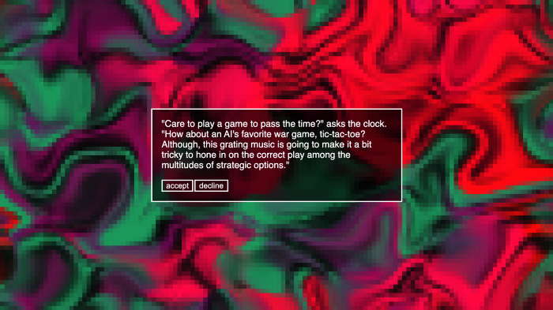

Second Prototype
This week, we were tasked with putting together a second prototype based on the feedback from our first prototype. Like last week, we built two versions of the prototype. One version is built in Unity, and aims to deliver on the gameplay aspects of the experience.
Our improved Unity prototype includes the scenes from our previous Unity prototype that are more fully fleshed out. The paragliding level has a goal and improved instructions, and the beginnings of the hospital level now include surreal animated textures and post-processing effects. Music and sound design were also added, making the experience feel more complete. Additionally, the player character’s thoughts appear as text throughout the experience.
The second version is a text-based prototype with sounds and abstract animations to set the mood. It aims to convey the narrative aspect of the game in a more complete package than would have been possible in Unity within our timeframe.
One of the main pieces of criticism we received on our original text-based prototype is that many choices lead to the same result. With this new version, we wanted to expand on the consequences of your actions, which meant a lot of writing! For example, your conversation with the psychotic AI digital clock (pictured above) will effect dialogue later on, and ultimately influence your chances of surviving the clock’s deadly ultimatum. Sentences and word choices might be altered slightly based on the clocks “mood,” which is a numeric value that increases or decreases based on your dialogue choices. Similarly, throughout the journey you will accrue “trauma” which has an impact on whether you make a healthy recovery.
This version of the game is playable in desktop browsers that aren’t Safari here.
We are looking forward to the insights we gather from the play testing session. We anticipate that the web-based prototype will provoke discussion about the structure of the interactive narrative, while the Unity prototype will let us field test the gameplay elements so that we may continue to refine them based on feedback.